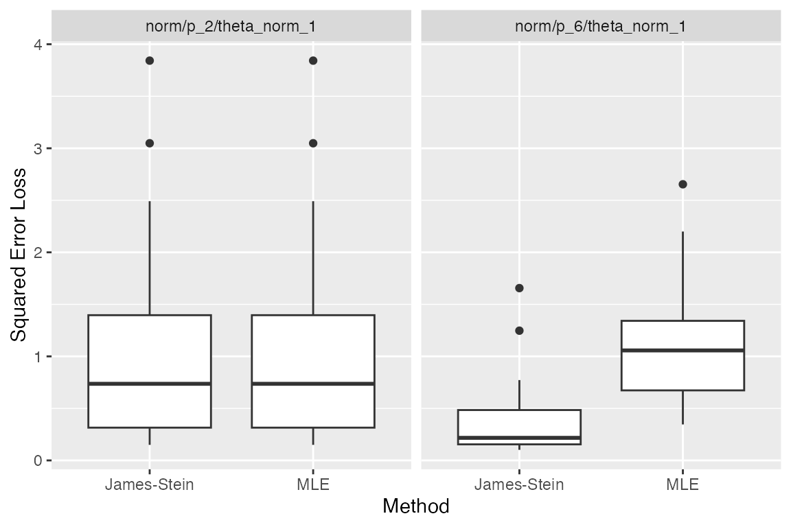
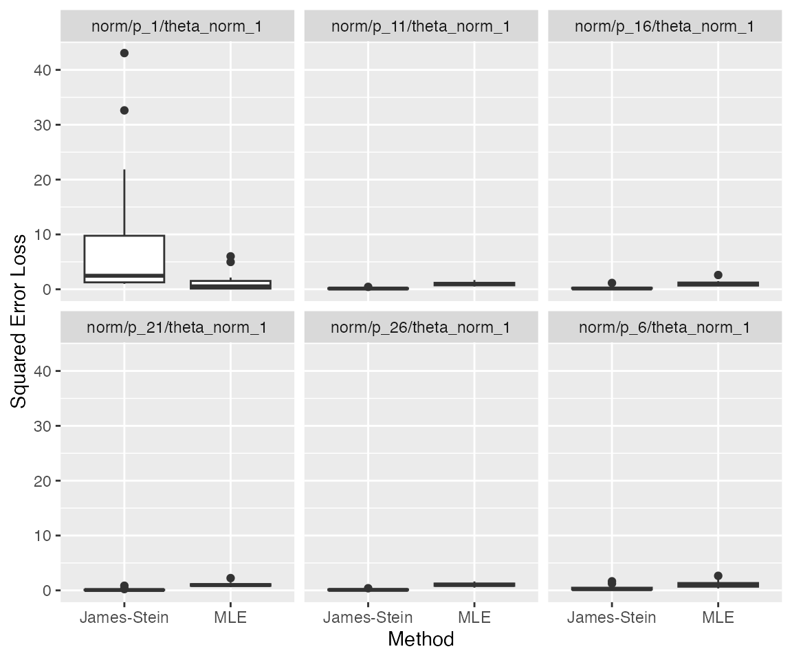
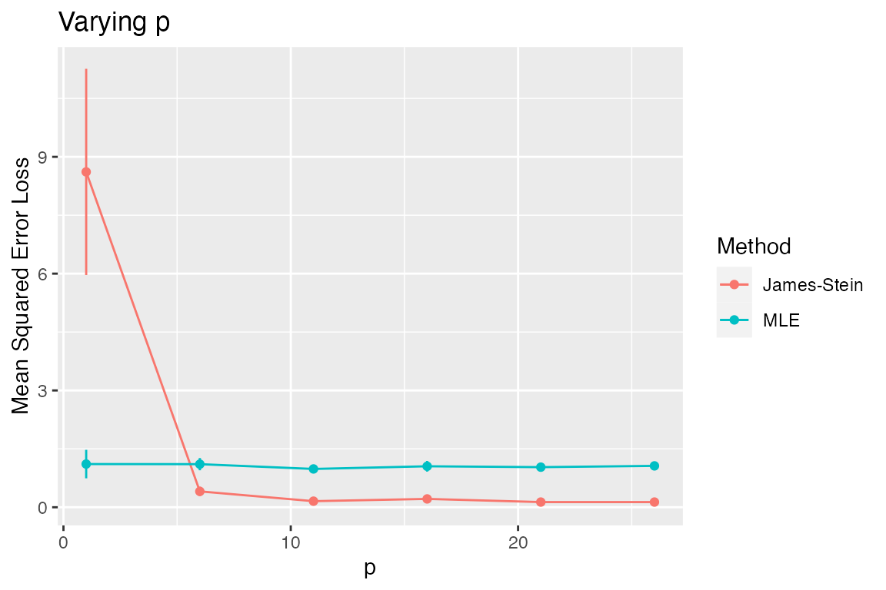
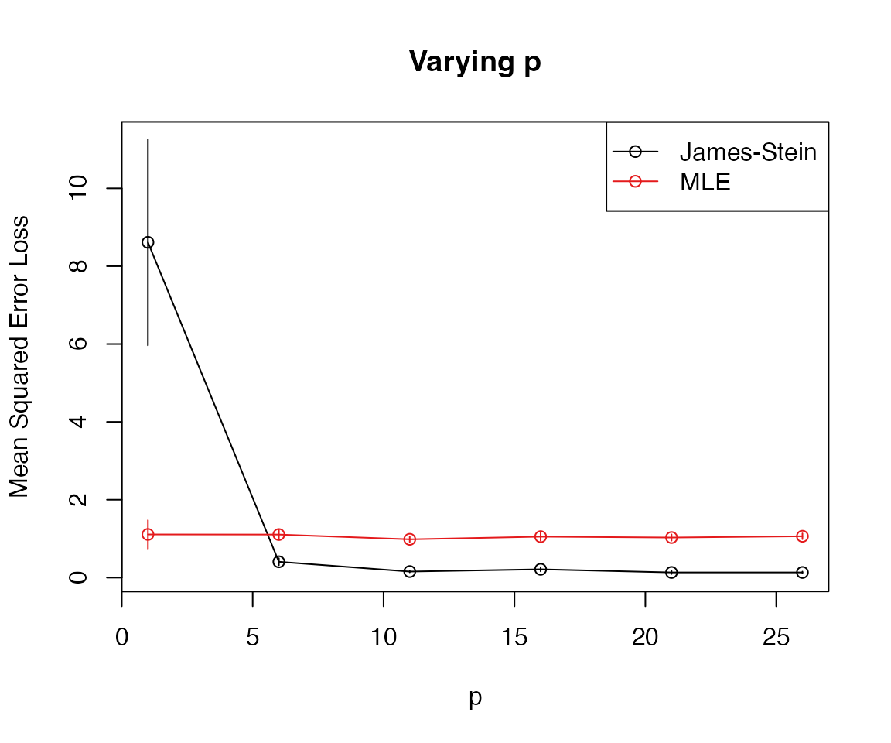
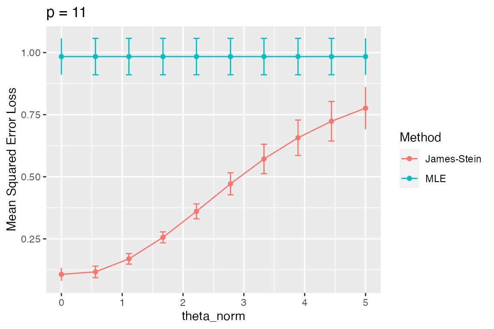
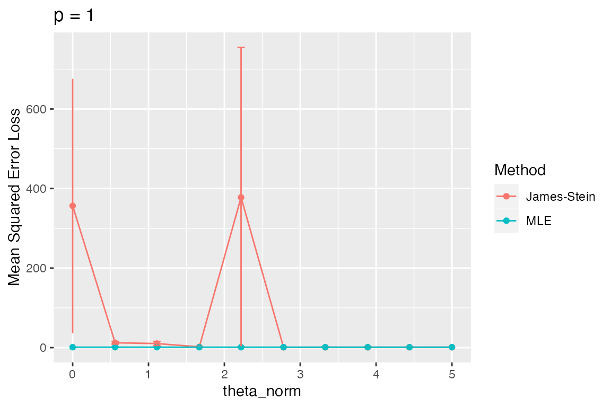
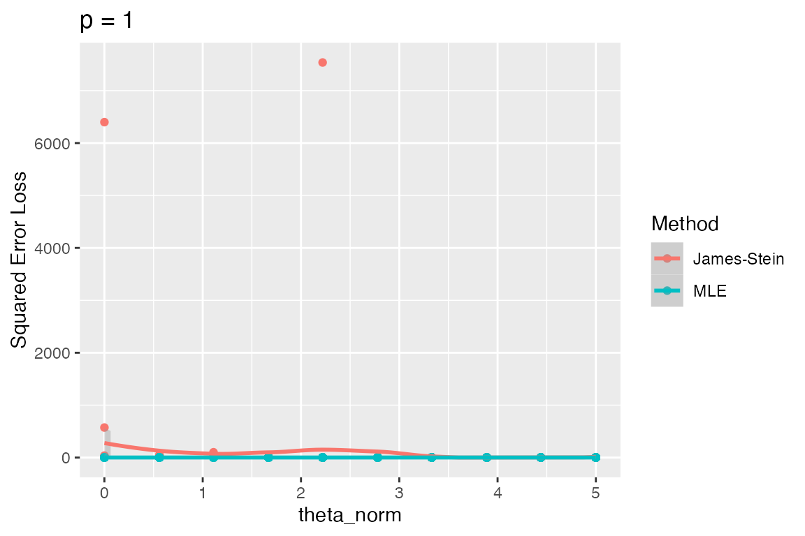

Background
Suppose we observe \(Y\sim N_p(\theta, I_p)\) and wish to estimate \(\theta\). The MLE, \(\hat\theta_{MLE}=Y\), would seem like the best estimator for \(\theta\). However, James and Stein showed that \[ \hat\theta_{JS}=\left(1-\frac{p-2}{\|Y\|^2}\right)Y \] dominates the MLE when \(p>2\) in terms of squared-error loss, \(\|\hat\theta - \theta\|^2\). We can see this in simulation.
Using the simulator
While this simulation requires so little code that we might just put
it all in one file, maintaining the standard simulator file structure is
beneficial for consistency across projects. When I look back at a
project from several years ago, it’s always helpful to look for the
files main.R, model_functions.R,
method_functions.R, and evals_functions.R. The
file main.R contains the code that is actually run to carry
out the simulations. The other three files define the individual
ingredients that are needed in the simulation.
Define the model(s)
In model_functions.R, I create a function that will
generate the model above with \(p\) and
\(\|\theta\|_2\) as parameters to be
passed at the time of simulation. (Without loss of generality, we take
\(\theta=\|\theta\|_2 e_1\).)
make_normal_model <- function(theta_norm, p) {
new_model(name = "norm",
label = sprintf("p = %s, theta_norm = %s", p, theta_norm),
params = list(theta_norm = theta_norm, p = p,
theta = c(theta_norm, rep(0, p - 1))),
simulate = function(theta, p, nsim) {
Y <- theta + matrix(rnorm(nsim * p), p, nsim)
return(split(Y, col(Y))) # make each col its own list element
})
}Define the methods
In method_functions.R, we create two functions, one for
each method:
mle <- new_method(name = "mle", label = "MLE",
method = function(model, draw) return(list(est = draw)))
js <- new_method(name = "jse", label = "James-Stein",
method = function(model, draw) {
l2 <- sum(draw^2)
return(list(est = (1 - (model$p - 2) / l2) * draw))
})Define the metric(s) of interest
And in eval_functions.R, we create a function for the
squared-error metric
sqr_err <- new_metric(name = "sqrerr", label = "Squared Error Loss",
metric = function(model, out) {
mean((out$est - model$theta)^2)
})The main simulation: putting the components together
Finally, we are ready to write main.R. Let’s start by
simulating from two models, one in which \(p=2\) and one in which \(p=6\).
sim1 <- new_simulation(name = "js-v-mle",
label = "Investigating the James-Stein Estimator") %>%
generate_model(make_normal_model, theta_norm = 1, p = list(2, 6),
vary_along = "p", seed = 123) %>%
simulate_from_model(nsim = 20) %>%
run_method(list(js, mle)) %>%
evaluate(sqr_err)## ..Created model and saved in norm/p_2/theta_norm_1/model.Rdata
## ..Created model and saved in norm/p_6/theta_norm_1/model.Rdata
## ..Simulated 20 draws in 0 sec and saved in norm/p_2/theta_norm_1/r1.Rdata
## ..Simulated 20 draws in 0 sec and saved in norm/p_6/theta_norm_1/r1.Rdata
## ..Performed James-Stein in 0 seconds (on average over 20 sims)
## ..Performed MLE in 0 seconds (on average over 20 sims)
## ..Performed James-Stein in 0 seconds (on average over 20 sims)
## ..Performed MLE in 0 seconds (on average over 20 sims)
## ..Evaluated James-Stein in terms of Squared Error Loss, Computing time (sec)
## ..Evaluated MLE in terms of Squared Error Loss, Computing time (sec)
## ..Evaluated James-Stein in terms of Squared Error Loss, Computing time (sec)
## ..Evaluated MLE in terms of Squared Error Loss, Computing time (sec)The output messages inform us about what files have been created. The
generate_model call leads to the creation of two models.
Both theta_norm and p are passed via
generate_model. However, our use of
vary_along = "p" indicates to the simulator that we wish to
generate a separate model for each entry in the list
p = list(2, 6).
The first two lines of output indicate that these models have been
created and saved to file (with directories named based on the names of
the corresponding model objects). Next, the
simulate_from_model function takes each of these models and
simulates 20 random draws from each model. Recall that objects of class
Model specify how data is generated from it. The third and
fourth lines of output tells us how long this took and where the files
are saved. The run_method function takes our two methods of
interest (the MLE and the James-Stein estimator) and runs these on each
random draw. Lines 5-8 tell us how long each of these took. Finally, the
function evaluate takes our metric (or more generally a
list of metrics) of interest and applies these to all outputs (of all
methods, over all draws, across all models). Lines 9-14 report which
metrics have been computed. (Note that a method’s timing information is
included by default.)
The returned object, sim1, is a Simulation
object. It contains references to all the saved files that have been
generated. The object sim1 is itself automatically saved,
so if you close and reopen the R session, you would simply type
sim1 <- load_simulation("js-v-mle") to reload it.
A look at the results
We are now ready to examine the results of the simulation.
plot_eval(sim1, metric_name = "sqrerr")
As expected, the James-Stein estimator does better than the MLE when \(p=6\), whereas for \(p=2\) they perform the same (as should be the case since they are in fact identical!). We see that the individual plots’ titles come from each model’s label. Likewise, each boxplot is labeled with the corresponding method’s label. And the y-axis is labeled with the label of the metric used. In the simulator, each label is part of the corresponding simulation component and used when needed. For example, if instead of a plot we wished to view this as a table, we could do the following:
tabulate_eval(sim1, metric_name = "sqrerr", output_type = "markdown")| James-Stein | MLE | |
|---|---|---|
| p = 2, theta_norm = 1 | 1.0766179 (0.23462879) | 1.0766179 (0.23462879) |
| p = 6, theta_norm = 1 | 0.4072435 (0.09179764) | 1.1065917 (0.12905231) |
If this document were in latex, we would instead use
output_type="latex". Since reporting so many digits is not
very meaningful, we may wish to adjust the number of digits shown:
tabulate_eval(sim1, metric_name = "sqrerr", output_type = "markdown",
format_args = list(nsmall = 1, digits = 1))| James-Stein | MLE | |
|---|---|---|
| p = 2, theta_norm = 1 | 1.1 (0.23) | 1.1 (0.23) |
| p = 6, theta_norm = 1 | 0.4 (0.09) | 1.1 (0.13) |
Demonstration of additional simulator features
Plotting a metric as a function of a numerical model parameter
Rather than looking at just two models, we might wish to generate a sequence of models, indexed by \(p\).
sim2 <- new_simulation(name = "js-v-mle2",
label = "Investigating James-Stein Estimator") %>%
generate_model(make_normal_model, vary_along = "p",
theta_norm = 1, p = as.list(seq(1, 30, by = 5))) %>%
simulate_from_model(nsim = 20) %>%
run_method(list(js, mle)) %>%
evaluate(sqr_err)We could display this with boxplots or a table as before…
plot_eval(sim2, metric_name = "sqrerr")
tabulate_eval(sim2, metric_name = "sqrerr", output_type = "markdown",
format_args = list(nsmall = 2, digits = 1))| James-Stein | MLE | |
|---|---|---|
| p = 1, theta_norm = 1 | 8.61 (2.65) | 1.11 (0.37) |
| p = 6, theta_norm = 1 | 0.41 (0.09) | 1.11 (0.13) |
| p = 11, theta_norm = 1 | 0.16 (0.02) | 0.98 (0.07) |
| p = 16, theta_norm = 1 | 0.21 (0.05) | 1.05 (0.11) |
| p = 21, theta_norm = 1 | 0.13 (0.04) | 1.03 (0.08) |
| p = 26, theta_norm = 1 | 0.13 (0.02) | 1.06 (0.08) |
…however, since p is a numerical value, it might be more
informative to plot p on the x-axis.
plot_eval_by(sim2, metric_name = "sqrerr", varying = "p")
We can also use base plot functions rather than
ggplot2:
plot_eval_by(sim2, metric_name = "sqrerr", varying = "p", use_ggplot2 = FALSE)
Easy access to results of simulation
The functions used above have many options allowing, for example,
plots and tables to be customized in many ways. The intention is that
most of what one typically wishes to display can be easily done with
simulator functions. However, in cases where one wishes to
work directly with the generated results, one may output the evaluated
metrics as a data.frame:
df <- as.data.frame(evals(sim2))
head(df)## Model Method Draw sqrerr time
## 1 norm/p_1/theta_norm_1 jse r1.1 1.648343 0
## 2 norm/p_1/theta_norm_1 jse r1.2 2.015828 0
## 3 norm/p_1/theta_norm_1 jse r1.3 43.065347 0
## 4 norm/p_1/theta_norm_1 jse r1.4 3.497164 0
## 5 norm/p_1/theta_norm_1 jse r1.5 2.918979 0
## 6 norm/p_1/theta_norm_1 jse r1.6 1.130775 0One can also extract more specific slices of the evaluated metrics. For example:
## Model Method Draw sqrerr time
## 1 norm/p_6/theta_norm_1 jse r1.1 0.1919394 0
## 2 norm/p_6/theta_norm_1 jse r1.2 1.2470374 0
## 3 norm/p_6/theta_norm_1 jse r1.3 0.1022489 0
## 4 norm/p_6/theta_norm_1 jse r1.4 0.5981796 0
## 5 norm/p_6/theta_norm_1 jse r1.5 0.1977684 0
## 6 norm/p_6/theta_norm_1 jse r1.6 0.2248202 0Varying along more than one parameter
We can also vary models across more than one parameter by passing
multiple variable names through vary_along. For example,
suppose we wish to vary both the dimension p and the norm
of the mean vector theta_norm. The following generates a
simulation with 30 models, corresponding to all pairs between 3 values
of p and 10 values of theta_norm. For each of
these 30 models, we generate 20 simulations on which we run two methods
and then evaluate one metric:
sim3 <- new_simulation(name = "js-v-mle3",
label = "Investigating the James-Stein Estimator") %>%
generate_model(make_normal_model, vary_along = c("p", "theta_norm"),
theta_norm = as.list(round(seq(0, 5, length = 10), 2)),
p = as.list(seq(1, 30, by = 10))) %>%
simulate_from_model(nsim = 20) %>%
run_method(list(js, mle)) %>%
evaluate(sqr_err)Having run all of these simulations, we can make plots that vary
\(\|\theta\|_2\) for fixed values of
\(p\). To do so, we use the
subset_simulation function, that allows us to select (out
of all 30 models) those ones meeting a certain criterion such as \(p\) having a certain value. (Although not
relevant here, we are also able to subset simulations by
index and by method.)
subset_simulation(sim3, p == 11) %>%
plot_eval_by(metric_name = "sqrerr", varying = "theta_norm", main = "p = 11")
We see that the MLE’s risk is constant whereas the James-Stein risk does depend on \(\|\theta\|_2\) with the greatest improvement occurring when \(\|\theta\|_2\) is small.
Suppose we wish to look at a different “slice” of the simulation such as when \(p=1\).
subset_simulation(sim3, p == 1) %>%
plot_eval_by(metric_name = "sqrerr", varying = "theta_norm", main = "p = 1")
Clearly, something strange is happening here. To investigate, we
start by looking at the raw squared-error values (whereas by default
plot_eval_by shows the sample mean over the random
draws).
subset_simulation(sim3, p == 1) %>%
plot_eval_by(metric_name = "sqrerr", varying = "theta_norm",
type = "raw", main = "p = 1")## `geom_smooth()` using method = 'loess' and formula = 'y ~ x'## Warning: Removed 19 rows containing missing values (`geom_smooth()`).
We notice a huge outlier at two values of theta_norm.
Let’s use this as an opportunity to show how debugging works with the
simulator (certainly a common task when writing
simulations!).
Examining earlier stages of a simulation
Let’s start by looking at the outlier when theta_norm is
0. Let’s check that \(\theta\) is a
scalar (because \(p=1\)) and that it is
equal to zero:
m <- model(sim3, p == 1 & theta_norm == 0)
m## Model Component
## name: norm/p_1/theta_norm_0
## label: p = 1, theta_norm = 0
## params: theta_norm p theta
## (Add @params to end of this object to see parameters.)
## (Add @simulate to end of this object to see how data is simulated.)When we print the model object m, we see some basic
information about it, including a reminder of what parameters are
included.1 While we can use
m@params$theta, we can write more simply:
m$theta## [1] 0As expected, \(\theta\) is a scalar equal to 0.
Now, let’s examine the \(Y\) values that were drawn:
d <- draws(sim3, p == 1 & theta_norm == 0)
d## Draws Component
## name: norm/p_1/theta_norm_0
## label: (Block 1:) 20 draws from p = 1, theta_norm = 0
## (Add @draws to end of this object to see what was simulated.)
d@draws[1:4] # this is a list, one per draw of Y. Look at first 4 elements.## $r1.1
## [1] -0.4094454
##
## $r1.2
## [1] 0.8909694
##
## $r1.3
## [1] -0.8653704
##
## $r1.4
## [1] 1.464271## Min. 1st Qu. Median Mean 3rd Qu. Max.
## -2.23182 -0.76999 -0.11728 -0.05857 0.49413 2.45053Nothing unusual looking yet. Let’s look directly at the squared errors that were computed to find which simulation realization is the problematic one. We’ll restrict ourselves to the James-Stein estimator in this case:
e <- evals(sim3, p == 1 & theta_norm == 0, methods = "jse")
e## Evals Component
## model_name: norm/p_1/theta_norm_0 index: 1 (20 nsim)
## method_name(s): jse (labeled: James-Stein)
## metric_name(s): sqrerr, time
## metric_label(s): Squared Error Loss, Computing time (sec)
## (Add @evals to end of this object or use as.data.frame to see more.)
df <- as.data.frame(e)
summary(df$sqrerr)## Min. 1st Qu. Median Mean 3rd Qu. Max.
## 4.054 4.263 6.137 356.414 10.503 6399.438
df[which.max(df$sqrerr), ]## Model Method Draw sqrerr time
## 14 norm/p_1/theta_norm_0 jse r1.14 6399.438 0We see that it is simulation draw r1.14 that is the culprit, having a squared error of 6399.4379981. Let’s look at what the James-Stein output was in this realization.
o <- output(sim3, p == 1 & theta_norm == 0, methods = "jse")
o@out$r1.14## $est
## [1] -79.99649
##
## $time
## user system elapsed
## 0 0 0It was very negative. How did this come about? Let’s look at \(Y\) in this case:
d@draws$r1.14## [1] -0.0125025This was relatively close to zero so that when we computed
1-(m$p - 2)/d@draws$r1.14^2## [1] 6398.438we get something quite large. Of course, when \(p=1\), the James-Stein estimator does not perform shrinkage but rather it inflates \(Y\), something that no one would expect to be a good idea! Now that we have investigated these outliers, we are confident that they do not reflect a coding error; rather, they are a “real” portrayal of the performance of the James-Stein estimator’s performance in this situation.